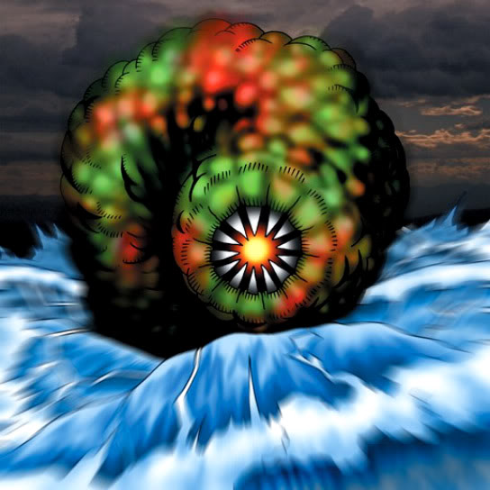

Zone Eater

Description: "Transforms all horizontal spaces to Sea spaces when this card is flipped face-up."
STATS
ATK: 250
DEF: 200DECK COST
Deck Cost per Card: 10EFFECT NOT IMPLEMENTED
Fusion List (7 Possible Fusions)
- Zone Eater + Baby Dragon = Spike Seadra
- Zone Eater + Bolt Penguin = Bolt Escargot
- Zone Eater + Dragon Zombie = Kairyu-Shin
- Zone Eater + Koumori Dragon = Spike Seadra
- Zone Eater + Labyrinth Wall = Dungeon Worm
- Zone Eater + Mega Thunderball = Bolt Escargot
- Zone Eater + Petit Dragon = Spike Seadra